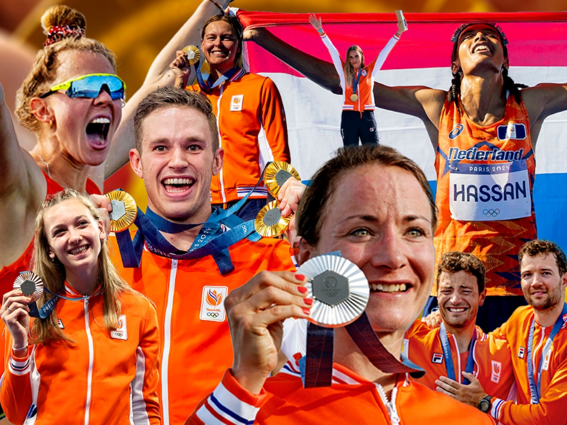
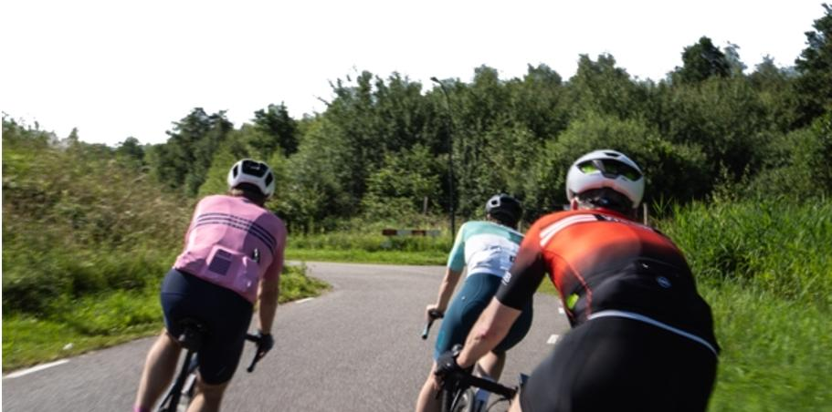
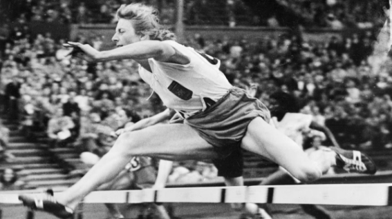
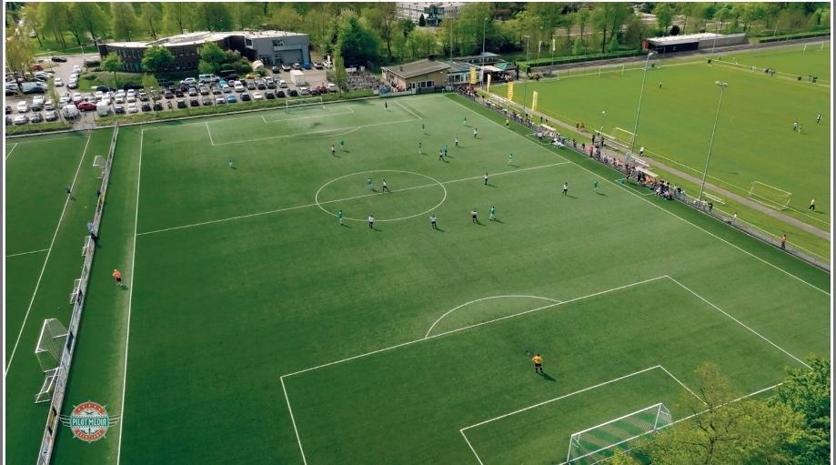
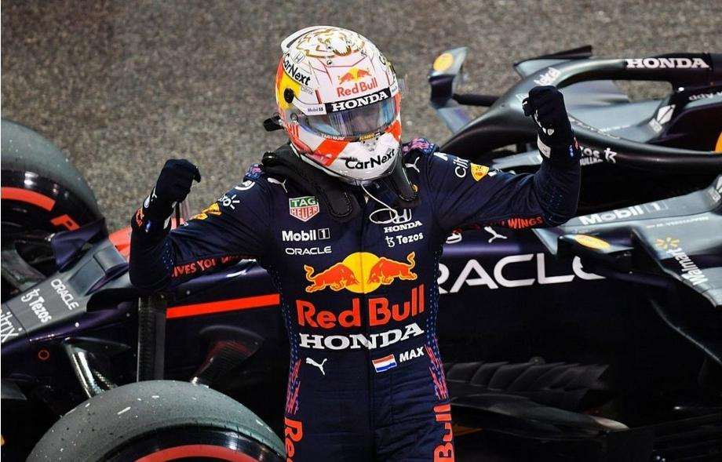
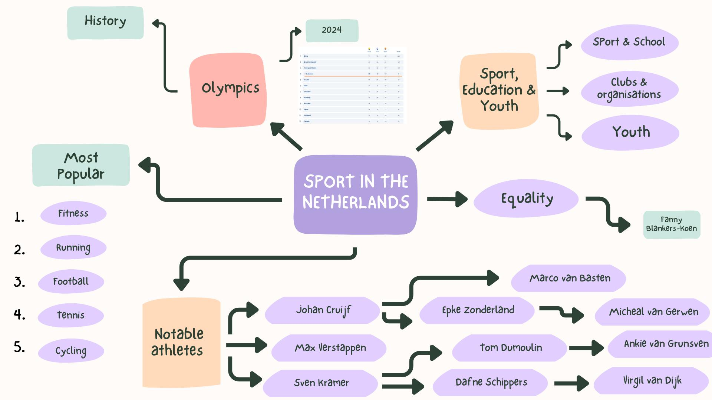

Photo 1
In the photo, you see a small red car parked in front of a big brick building. The wall of the building is plain, with no windows. There is a Star of David on the wall and some Hebrew writing above it. The sun is shining brightly from the top right, and the sky is blue with some clouds. This photo gives a calm and quiet feeling. The Star of David and the Hebrew text show that this is probably a Jewish building, like a synagogue. The strong brick wall can mean strength and memory. The sunlight makes the place feel peaceful. The photo shows a mix of old and new – the old building and the new car. It can be about remembering history and showing respect to the Jewish culture.
Photo 2
This photo shows a large, old church building made of dark bricks. The windows are tall and have stained glass. There are two towers at the top. On the left side, there is a big tree, and next to the tree we see scaffolding. Two people in red clothes are standing on the scaffolding. This photo gives a feeling of history and religion. The church is very tall and beautiful, which can make people feel small or amazed. The people on the scaffolding show that the church is being repaired or taken care of. The photo can be about respect for old buildings and the people who protect them. It also shows the mix of nature (the tree), people (the workers), and religion (the church).
Photo 3
This photo shows a tall brick church tower with many windows and a clock near the top. There is a large stained-glass window below and some stone statues on the walls. On the right side, there is scaffolding and part of a green tree. The sky is light blue with some clouds. This photo is about looking up — not just with your eyes, but also in your thoughts. The church tower reaches high into the sky, almost like it wants to touch something greater. It can make you think about dreams, hope, or something spiritual. The clock shows how time keeps moving, but the old building stays. The scaffolding reminds us that even strong things sometimes need help. This photo is not only about a church — it is about growth, change, and keeping important things safe.
Photo 4
This photo shows the inside of a mosque. The floor is covered with a red carpet with blue and white patterns. There are white columns and soft lights in the ceiling. The room is open and empty, with just a few chairs and small stools. On the back wall, you can see some decorations and a prayer niche (mihrab), which shows the direction of Mecca. This photo gives a feeling of peace and quiet. The mosque is a place for prayer, reflection, and calm. The open space and soft colors help people focus and feel relaxed. It is not crowded, which shows that it is ready for people to come in and pray. The photo can also show the importance of faith and the beauty of a simple, clean space made for spiritual moments.
Photo 5
This photo shows a tall round building made of dark brown bricks. It is a water tower, and it has small windows and a very high shape. In front of the building, there are bikes parked, a tree, and a woman standing with a bicycle. The sky is bright blue and clear, and sunlight shines strongly from the top left. This building is special because it is both a water tower and a mosque. That is not something you see every day. It shows how an old place can get a new meaning. The photo is about change, reuse, and mixing the past with the present. A tower that once held water now gives space for prayer and community. It shows creativity and respect for both history and religion. The bikes and people around it also make it feel like part of daily life.
Infographic
